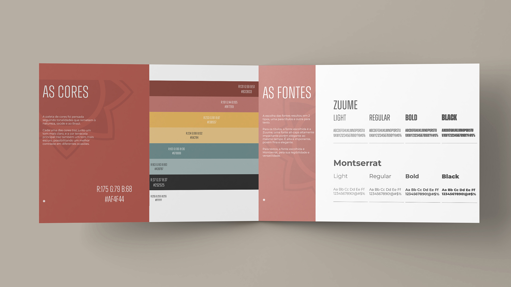
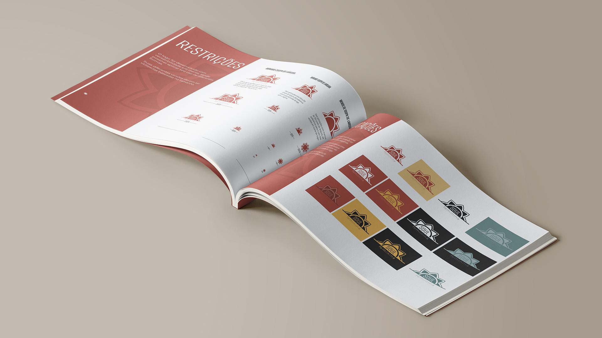
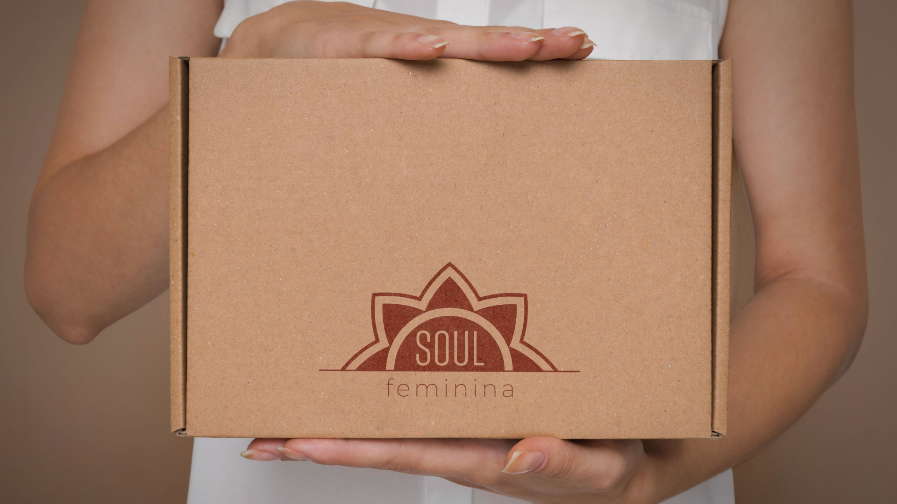
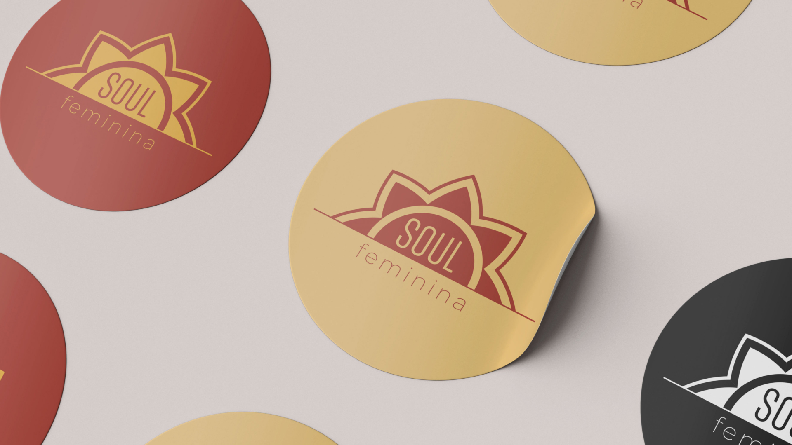
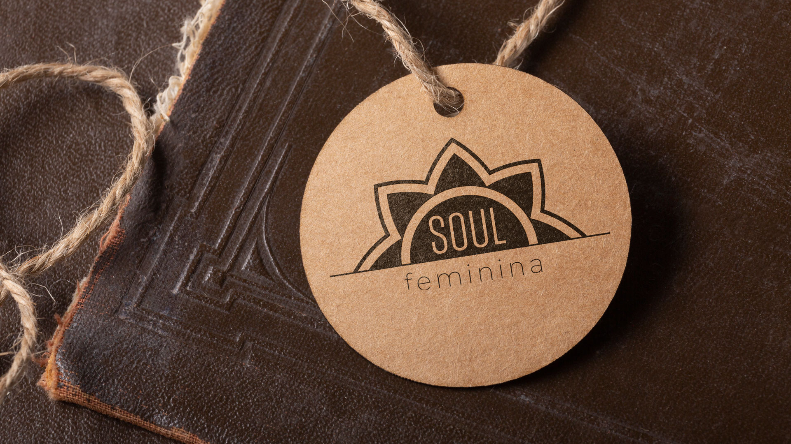

Soul Feminina is a female-first Brazilian brand that blends natural wellness, fashion, and health products into a unified lifestyle. The branding reflects the brand's core values—authenticity, vitality, and femininity—through organic shapes, earthy colors, and elegant design elements inspired by Brazilian culture.
The visual identity was created to feel both empowering and nurturing, appealing to women seeking balance and self-care.
From the logo to packaging, every detail aims to build trust and emotional connection with a modern, health-conscious audience.